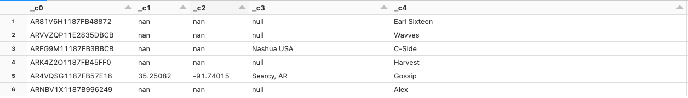

Explore the source data for a data pipeline
A common first step in creating a data pipeline is understanding the source data for the pipeline. In this step, you will run Databricks Utilities and PySpark commands in a notebook to examine the source data and artifacts.
To learn more about exploratory data analysis, see Exploratory data analysis on Databricks: Tools and techniques.
Video: Introduction to Databricks notebooks
For an introduction to Databricks notebooks, watch this video:
Create a data exploration notebook
In the sidebar, click
 New and select Notebook from the menu. The notebook opens with a default name that you can replace.
New and select Notebook from the menu. The notebook opens with a default name that you can replace.Enter a name for the notebook, for example,
Explore songs data. By default:Python is the selected language.
The notebook is attached to the last cluster you used. In this case, the cluster you created in Step 1: Create a cluster.
To view the contents of the directory containing the dataset, enter the following in the first cell of the notebook, click , and select Run Cell.
%fs ls "/databricks-datasets/songs/data-001"
path
name
size
modificationTime
1
dbfs:/databricks-datasets/songs/README.md
README.md
1719
1454620183000
2
dbfs:/databricks-datasets/songs/data-001/
data-001/
0
1672791237846
3
dbfs:/databricks-datasets/songs/data-002/
data-002/
0
1672791237846
Explore the data
The README file has information about the dataset, including a description of the data schema. The schema information is used in the next step when ingesting the data. To view the contents of the README, click in the cell actions menu, select Add Cell Below, enter the following in the new cell, click , and select Run Cell.
%fs head --maxBytes=10000 "/databricks-datasets/songs/README.md"
Sample of Million Song Dataset =============================== ## Source This data is a small subset of the [Million Song Dataset](http://labrosa.ee.columbia.edu/millionsong/). The original data was contributed by The Echo Nest. Prepared by T. Bertin-Mahieux <tb2332 '@' columbia.edu> ## Attribute Information - artist_id:string - artist_latitude:double - artist_longitude:double - artist_location:string - artist_name:string - duration:double - end_of_fade_in:double - key:int - key_confidence:double - loudness:double - release:string - song_hotnes:double - song_id:string - start_of_fade_out:double - tempo:double - time_signature:double - time_signature_confidence:double - title:string - year:double - partial_sequence:int ...
The records used in this example are in the
/databricks-datasets/songs/data-001/directory. To view the contents of this directory, click in the cell actions menu, select Add Cell Below, enter the following in the new cell, click , and select Run Cell.%fs ls "/databricks-datasets/songs/data-001"
path
name
size
modificationTime
1
dbfs:/databricks-datasets/songs/data-001/header.txt
header.txt
377
1454633901000
2
dbfs:/databricks-datasets/songs/data-001/part-00000
part-00000
52837
1454547464000
3
dbfs:/databricks-datasets/songs/data-001/part-00001
part-00001
52469
1454547465000
Because the README and file names do not indicate the file format, you can view a sample of the records to better understand the contents and format of each record. To read and display the first ten records from one of the data files, click in the cell actions menu, select Add Cell Below, enter the following in the new cell, click , and select Run Cell.
%fs head --maxBytes=10000 "/databricks-datasets/songs/data-001/part-00000"
AR81V6H1187FB48872 nan nan Earl Sixteen 213.7073 0.0 11 0.419 -12.106 Soldier of Jah Army nan SOVNZSZ12AB018A9B8 208.289 125.882 1 0.0 Rastaman 2003 -- ARVVZQP11E2835DBCB nan nan Wavves 133.25016 0.0 0 0.282 0.596 Wavvves 0.471578247701 SOJTQHQ12A8C143C5F 128.116 89.519 1 0.0 I Want To See You (And Go To The Movies) 2009 -- ARFG9M11187FB3BBCB nan nan Nashua USA C-Side 247.32689 0.0 9 0.612 -4.896 Santa Festival Compilation 2008 vol.1 nan SOAJSQL12AB0180501 242.196 171.278 5 1.0 Loose on the Dancefloor 0 225261 ...
You can observe a few things about the data from viewing a sample of the records. You’ll use these observations later when processing the data:
The records do not contain a header. Instead, the header is stored in a separate file in the same directory.
The files appear to be in tab-separated value (TSV) format.
Some fields are missing or invalid.
To further explore and analyze the data, you can use these observations to load the TSV formatted song data into a PySpark DataFrame. To do this, click in the cell actions menu, select Add Cell Below, enter the following code in the new cell, and then click > Run Cell. A DataFrame is a distributed data structure that organizes data into a two-dimensional table of rows and columns, providing a flexible and intuitive way to store and work with that data.
df = spark.read.format('csv').option("sep", "\t").load('dbfs:/databricks-datasets/songs/data-001/part-00000') df.display()
Because the data file is missing a header, the column names display as
_c0,_c1, and so on. Each column is interpreted as astringregardless of the actual data type. The ingestion of the raw data in the next step shows an example of how you can impose a valid schema when you load the data.